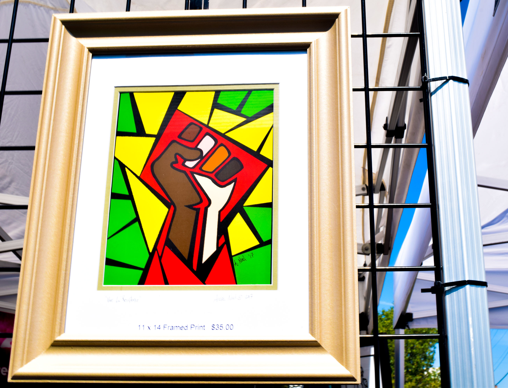

HYATTSVILLE, MD – Since 2017, Espaço Cultural Samba Trovão has offered locals a taste of the Afro-Brazilian culture.
Located in the heart of the Hyattsville Arts District, the Brazilian cultural center offers classes in Capoeira Angola, Samba dance, percussion and more.
Founder and Executive Director Livaldi Pereira da Cruz, a native of Brazil, has been in the Washington area since 2004 developing programs, workshops and projects that bring the African roots and traditions of the Brazilian culture to life.
Hyattsville was chosen as the cultural center’s location because of the city’s diverse population and the various festivals that feature music and art from around the globe.
Kristen da Cruz, Espaço co-founder and Livaldi’s wife, said that cultural traditions are important and are meant to be shared with those in the community. She described Espaço as a cultural fitness center.
“You can get a little bit of culture, be exposed to new things, while also trying to stay fit and healthy,” she said.
The da Cruz’s two daughters are heavily involved at the center and participate in several of the classes.
Kristen believes that it is pertinent that her daughters remain connected to the Brazilian heritage on their father’s side through the activities offered at the space, as well as “know as much the culture they’re growing up in.”
The slave trade lasted longer in Brazil than in almost any other country in the Americas.
African slaves were brought into Brazil as early as 1530. The Brazilian economy relied on slavery until it was legally abolished in 1888.
A 2017 article from HuffPost discusses the historical context of Afro-Brazilians and their influence. Beginning around 1550, the Portuguese started trading slaves from the West and Central African regions.
Brazil's population was split into just two groups: free people and slaves.
Source: Data collected by The GuardianFor over three centuries, slavery was the heart of the Brazilian economy. It is reported that 40% of the 10 million African slaves brought to the New World came to Brazil. (Numbers of slaves are in millions.)
Source: Data collected by the University of Texas at AustinThe Africans who arrived in Brazil brought their music and cultural traditions, which would “inevitably infuse with the Portuguese and Amerindian customs, to produce a unique cultural manifestation of its own,” the article said.
One of the widely distinguished cultural traditions that developed was Capoeira Angola.
Capoeira Angola is an ancient martial art of African origin, and it was one of the numerous cultural weapons used to break the chains of slavery in Brazil.
In the eyes of the enslavers, it appeared to be a joking and playful acrobatic dance; however, its power was revealed and Capoeira was outlawed. Death was the penalty for those caught playing Capoeira during the slavery era.
Music is played on traditional instruments to accompany the players to teach the rhythmic heart of the art and to mask its power.
For almost 400 years, Capoeira Angola was taught and practiced in secret. In the 1930s, the African martial art become legal to teach and practice. Livaldi started practicing Capoeira Angola at just 10 years old, and he has not stopped since.
Kristen particiates in the adult Capoeira Angola classes. She pinpointed that it's not meant to be a violent sport. Rather, it is practiced and considered as more of a game.
According to Kristen, children become stronger through the presence of community. One of the primary goals for the center is to expand the youth programs and replicate the model of how Livaldi grew up living in Brazil.
The da Cruz’s want the center to be a creative outlet for students and young adults where they can be physically active and engaged without the use of technology.
Currently, the center provides annual summer camps and programs that highlight different aspects of the Afro-Brazilian culture.
Livaldi said the center has an open-door policy so that anyone can come and experience the beauty and uniqueness of the Afro-Brazilian culture.
To learn more about Espaço Cultural Samba Trovão and to view the schedule of classes, visit sambatrovao.com.